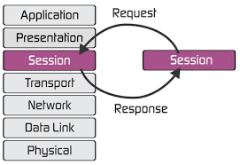
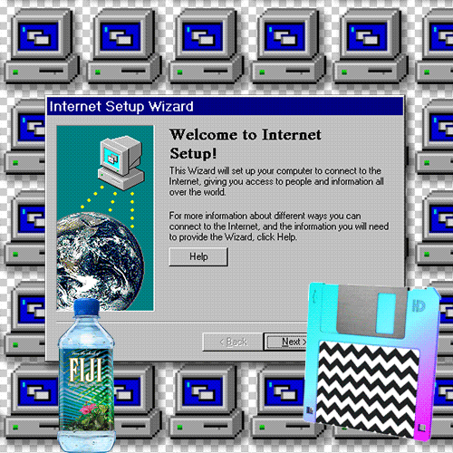

What is the Session Layer?
Do you use the internet? Chances are, if you are reading this, the answer is yes! The internet can be confusing, so this website will leave you with a little more knowledge than when you came. The internet can be represented using different models, for the purposes of this website, that model is the OSI model. The Osi model is comprised of 7 different layers of processes that make the internet possible.
The Session layer is "responsible for opening and closing communication between the two devices. The time between when the communication is opened and closed is known as the session. The session layer ensures that the session stays open long enough to transfer all the data being exchanged, and then promptly closes the session in order to avoid wasting resources." (Cloudflare)

(Giphy)
Data Checkpoints
Wouldn't it be annoying if you were 99 gigabytes into a 100 gigabyte file download and the connection flutters for a moment and you have to start the whole proccess again? Well, you have the Session layer to thank. The Session layer is responisble for a protocol that creates data checkpoints when downloading a file so you dont lose all of you progress when the connection cuts out .
"The session layer also synchronizes data transfer with checkpoints. For example, if a 100 megabyte file is being transferred, the session layer could set a checkpoint every 5 megabytes. In the case of a disconnect or a crash after 52 megabytes have been transferred, the session could be resumed from the last checkpoint, meaning only 50 more megabytes of data need to be transferred." (Cloudflare)
(Tenor)
TCP/IP model
Remember back to the begining where there were multiple different models to represent? Well, the TCP/IP model is the other main model of this kind. The Session layer represented in the OSI model can be found within the many tasks of the Application layer in the TCP/IP model. The SCTP and TCP protocols in the TCP/IP model are what most closly resembles the Session layer in the OSI model. These TCP/IP models are resposible for data transmission and do the job of many OSI layers in one. The Application layer also handles connection within the network, and by doing so handels the opening and closing of sessions.
(Giphy)
What Is the OSI Model? https://www.cloudflare.com/learning/ddos/glossary/open-systems-interconnection-model-osi/ Accessed 13 Oct. 2022. Link to Arrticle
Tenor Giphy Giphy{kind=link}